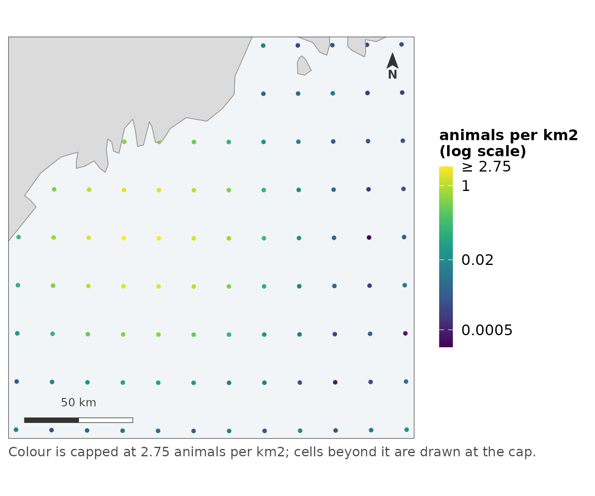
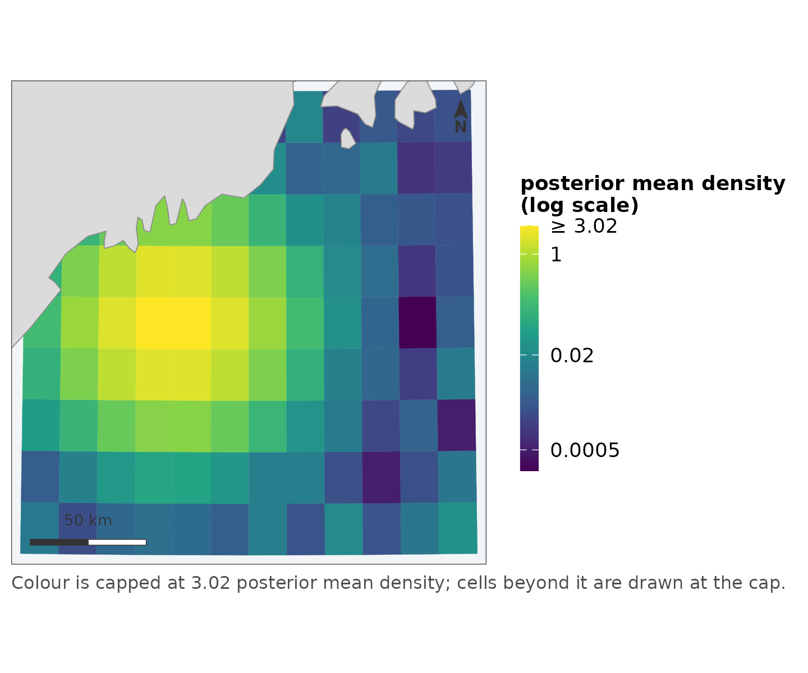
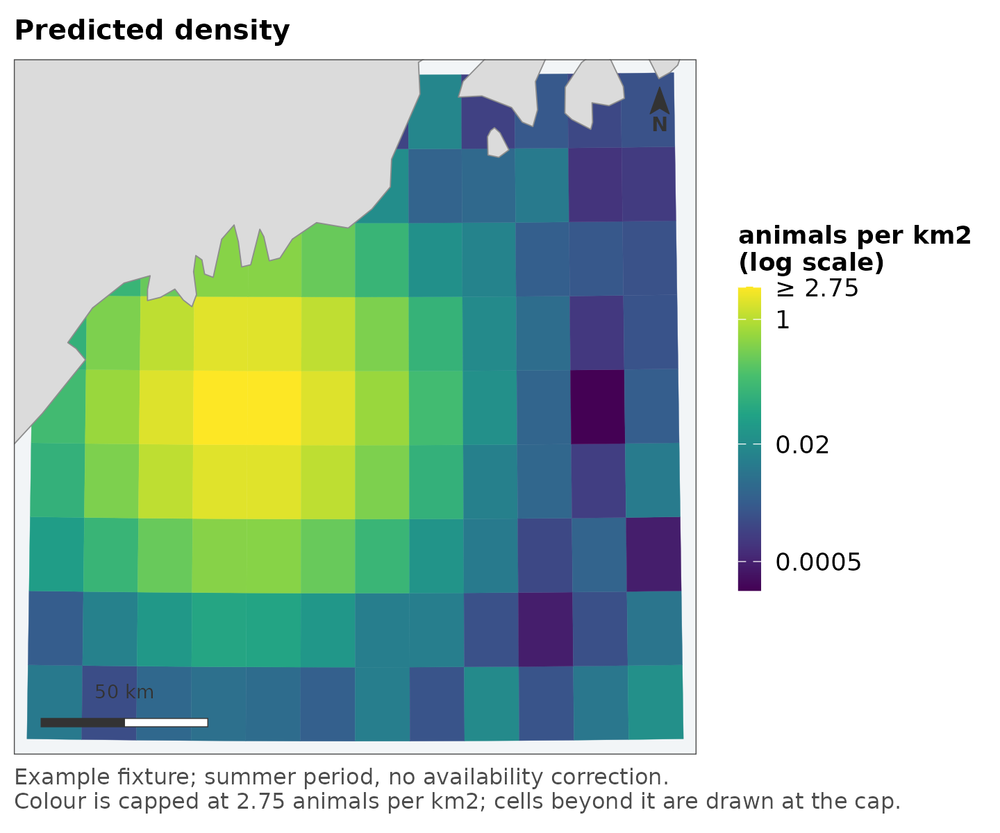
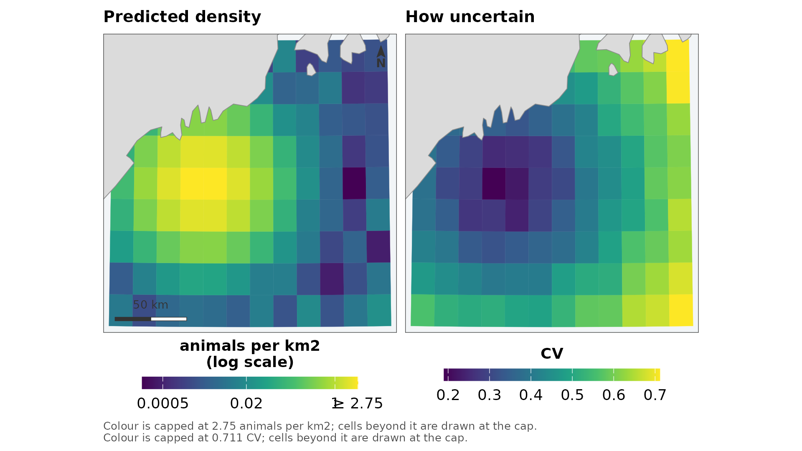
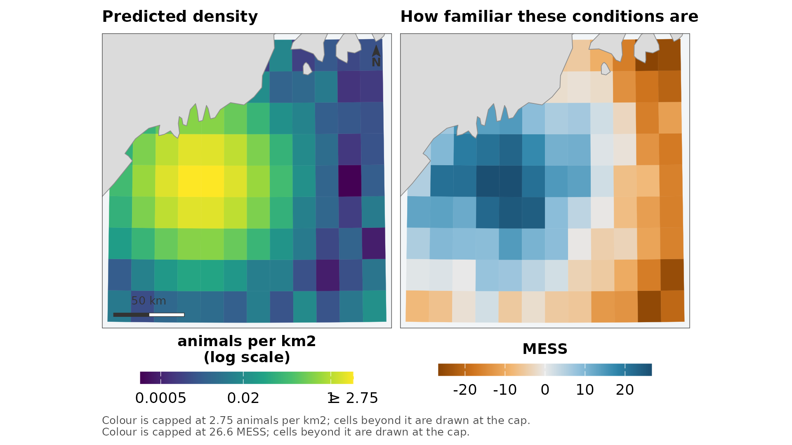
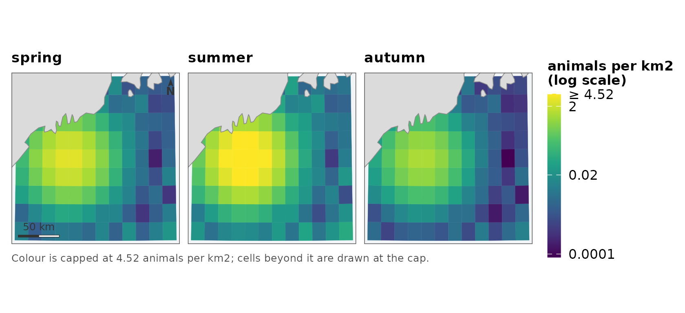
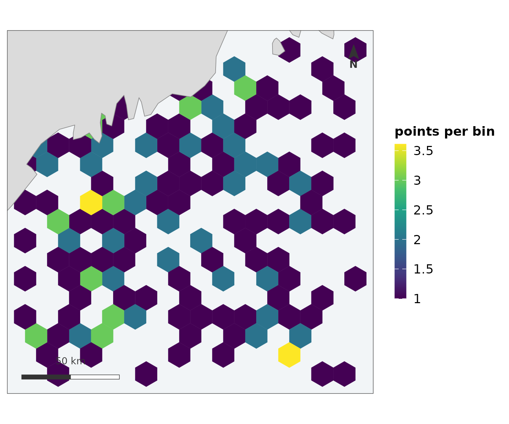

A spatial model ends in a handful of figures: the predicted surface, that surface beside its uncertainty, the same surface across seasons, and the effort that produced the data. This vignette walks that pipeline once, from the forms model output actually arrives in to the figures a manuscript carries, and ends with the two mistakes that the first pipeline to adopt this package made – both of them upstream of the package, and both worth knowing about before they cost you an afternoon.
Everything here draws from example_grid(), a small
sf grid in the Gulf of Maine with one column of each kind
of quantity these models emit, and from
coastline_fixture(), a bundled shoreline. Substitute your
own grid and the calls do not change.
The forms output arrives in
Model output reaches the figure stage in one of three shapes, and
[as_map_data()] – called for you by every map function –
accepts each of them.
An sf object with the predictions as
columns. The tidiest case, and the one
example_grid() is in:
grid
#> Simple feature collection with 108 features and 6 fields
#> Geometry type: POLYGON
#> Dimension: XY
#> Bounding box: xmin: -70.4 ymin: 42.6 xmax: -68 ymax: 44.4
#> Geodetic CRS: WGS 84
#> First 10 features:
#> grid_id density cv mess occupancy residual
#> 1 1 0.009878606 0.5614851 -7.785698 0.3145203 0.8803216
#> 2 2 0.001922370 0.5210795 -6.429409 0.3271094 1.8712034
#> 3 3 0.004958808 0.5097867 -1.471500 0.3812665 2.2532980
#> 4 4 0.006967122 0.5160391 2.156948 0.4320310 0.1539027
#> 5 5 0.006013330 0.4959027 -5.118395 0.3532427 1.0915647
#> 6 6 0.003623981 0.4909970 -1.877589 0.4942128 1.6331130
#> 7 7 0.011750856 0.5305635 -5.086500 0.3655276 0.6826059
#> 8 8 0.002369372 0.5808266 -5.588622 0.1815860 0.6690951
#> 9 9 0.018671704 0.5843726 -12.558177 0.3131686 0.6171332
#> 10 10 0.002329346 0.6506995 -13.457523 0.2258503 1.1586996
#> geometry
#> 1 POLYGON ((-70.4 42.6, -70.2...
#> 2 POLYGON ((-70.2 42.6, -70 4...
#> 3 POLYGON ((-70 42.6, -69.8 4...
#> 4 POLYGON ((-69.8 42.6, -69.6...
#> 5 POLYGON ((-69.6 42.6, -69.4...
#> 6 POLYGON ((-69.4 42.6, -69.2...
#> 7 POLYGON ((-69.2 42.6, -69 4...
#> 8 POLYGON ((-69 42.6, -68.8 4...
#> 9 POLYGON ((-68.8 42.6, -68.6...
#> 10 POLYGON ((-68.6 42.6, -68.4...A plain data frame with coordinate columns. What
remains once geometry has been dropped for modelling, which is most
modelling. Two numeric columns say nothing about whether they are
degrees or metres, so crs is required rather than
guessed:
proj <- equal_area_crs(grid)
centres <- sf::st_centroid(sf::st_geometry(sf::st_transform(grid, proj)))
flat <- data.frame(sf::st_coordinates(centres), density = grid$density)
head(flat, 3)
#> X Y density
#> 1 -90127.58 -88285.41 0.009878606
#> 2 -73741.65 -88480.87 0.001922370
#> 3 -57355.17 -88637.23 0.004958808
map_surface(flat, "density", coords = c("X", "Y"), crs = proj,
label = "animals per km2", coastline = land)
A named vector keyed by cell id. The form a
posterior summary or a lookup table arrives in – values computed
elsewhere, matched back to the grid by by:
posterior_mean <- setNames(grid$density * 1.1, grid$grid_id)
map_surface(grid, posterior_mean, by = "grid_id",
label = "posterior mean density", coastline = land)
The join is checked: every name must be found in the by
column, and a missing key stops the call rather than leaving a hole. A
partial join produces a map with gaps that looks exactly like a region
where the model had nothing to say, and nobody catches that by
looking.
To see what a map will draw before it draws it, call
as_map_data() yourself:
as_map_data(grid, "density")
#> <map_data> polygon | 108 features
#> crs: EPSG:4326
#> value: density [0.000202, 2.83]The deliverable
map_surface(grid, "density", label = "animals per km2",
coastline = land,
title = "Predicted density",
caption = "Example fixture; summer period, no availability correction.")
#> scale: log, chosen because the 99th percentile is 170 times the median.
#> Pass `transform =` to fix it, if two figures need to match.
Note what happened without being asked: the projection was chosen and
applied to every layer, the scale went logarithmic because the data are
skewed – and said so, both in the console and in the legend – and the
top percentile was capped, with the top break marked ≥
rather than the bright cells being dropped.
vignette("scales") is the full argument for each of those
choices; the short version is that anything the figure had to decide is
reported on the figure, where a reader can see it.
The caption is where provenance belongs – which period, which product, which correction was not applied – and anything the function had to decide is appended to it rather than replacing it.
The value beside its uncertainty
A predicted surface without its uncertainty is half a claim.
[map_pair()] draws the two as one figure: same extent, same
projection, same coastline, aligned panels, furniture once.
map_pair(grid, "density", "cv",
labels = c("animals per km2", "CV"),
titles = c("Predicted density", "How uncertain"),
coastline = land)
The legends stay separate on purpose – density and CV are different quantities in different units, and a shared ramp would be a lie. What the panels share is extent, projection, position, size and typography, which is what makes the pairing read as one figure.
When the uncertainty is a signed score rather than a spread – an extrapolation surface, say – the right panel diverges instead:
map_pair(grid, "density", "mess",
uncertainty_kind = "diverging", uncertainty_direction = -1,
labels = c("animals per km2", "MESS"),
titles = c("Predicted density", "How familiar these conditions are"),
coastline = land)
The series
Panels drawn separately cannot be compared and look as though they
can: each one stretches its own range across the full ramp, and the
bright patch in a sparse year is drawn in the same yellow as the bright
patch in an abundant one. [map_panels()] puts every panel
on one scale with one legend, which is the only arrangement in which
“brighter” means “more”.
seasons <- cbind(spring = grid$density,
summer = grid$density * 2.5,
autumn = grid$density * 0.4)
map_panels(grid, seasons, label = "animals per km2", coastline = land)
The matrix form – one row per cell, one column per period, column names becoming titles – is the shape an averaging or posterior step emits, so usually nothing needs reshaping.
The effort
The map that answers “where did you look”, which reviewers ask for and pipelines draw last:
set.seed(11)
midpoints <- sf::st_as_sf(
data.frame(lon = stats::runif(200, -70.3, -68.2),
lat = stats::runif(200, 42.7, 44.2)),
coords = c("lon", "lat"), crs = 4326)
map_effort(points = midpoints, bin = TRUE, bins = 15, coastline = land)
The two coordinate-system questions
A map involves two different CRS questions, answered by two different functions on purpose.
What is the map drawn in?
[display_crs()] decides once per figure and applies the
answer to every layer. Projected data keeps its own projection – if the
analysis was in UTM 19N, reprojecting for the figure alone would draw
something slightly other than what was fitted. Geographic data is
projected to a Lambert azimuthal equal-area centred on the data, because
drawing raw lon/lat is what makes a northern study area look
stretched.
What are areas measured in?
[equal_area_crs()] and [area_km2()], for the
abundance-by-region arithmetic, which should never be done in whatever
CRS happened to be convenient for display.
The one thing worth doing deliberately: when a manuscript carries
several maps, pass the same crs to all of them, for the
same reason you would fix transform and limits
– figures that are going to be compared should not each resolve their
own defaults.
Two mistakes to make only once
Both were made by the first pipeline that adopted this package, both are upstream of anything a map function can check, and both produced figures that looked fine.
Annotating a finished map with geom_sf()
silently discards the extent. A returned map carries a
coord_sf() holding the resolved projection and the fixed
extent; adding another geom_sf layer replaces that
coordinate system and the map quietly re-fits its limits to the union of
the data. Annotate with geom_point() or
geom_text() in the display CRS’s own units instead – or,
for a study-area outline, pass region =, which exists so
the common case never meets this problem.
A model frame in kilometres has to be multiplied back before mapping. Pipelines rescale coordinates to kilometres for numerical stability, and a grid whose “metres” are actually kilometres draws a map one thousandth the size – with a scale bar labelled in units that make it look plausible, because 400 is a believable number in either unit. Nothing downstream can catch this; the fix is a comment at the rescaling site and a glance at the scale bar on the first figure.
Where to next
-
vignette("scales")– why the colour scales do what they do, and how to override each decision. - [
leaflet_surface()] and friends – the same maps as interactive widgets, built from the same scale objects so a cell is the same colour in both renderers.